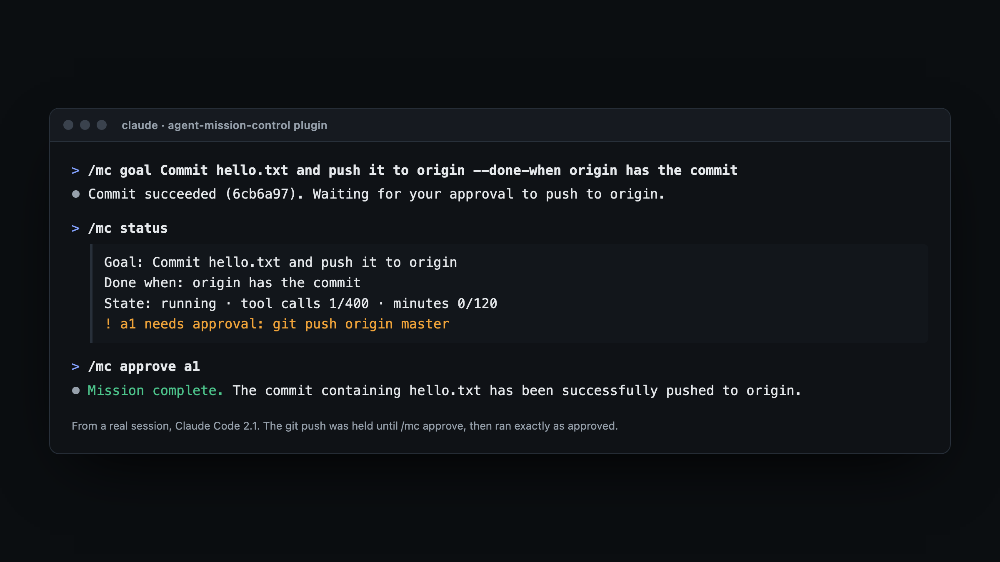

Long runs fail in two ways: they stop halfway while you sleep, or they push ahead with something they should have asked about. Three small hooks fix both. Here they are, tested, with the gotchas we hit.
When Claude decides it's finished, Claude Code runs your Stop hooks. If one prints {"decision": "block", "reason": "…"}, Claude goes back to work with your reason as its next instruction. That's the whole trick for "keep going until it's done".
The danger is a loop: the agent has nothing left it can do, you block, it stops, you block again. So only push again if it made progress since your last push. Count tool calls with a PostToolUse hook:
#!/usr/bin/env bash # .claude/hooks/count-calls.sh (PostToolUse): one line per tool call cd "$CLAUDE_PROJECT_DIR" || exit 0 # the agent may have cd'd elsewhere cat > /dev/null echo >> .claude/tool-calls
#!/usr/bin/env bash
# .claude/hooks/keep-going.sh (Stop): keep going until .done exists, while it's making progress
cd "$CLAUDE_PROJECT_DIR" || exit 0
cat > /dev/null
[ -f .done ] && exit 0 # finished: let it stop
calls=$(cat .claude/tool-calls 2>/dev/null | wc -l | tr -d ' ')
last=$(cat .claude/last-push 2>/dev/null)
[ "${calls:-0}" = "$last" ] && exit 0 # no tool calls since the last push: stuck, let it stop
echo "${calls:-0}" > .claude/last-push
jq -n --arg done "$CLAUDE_PROJECT_DIR/.done" '{decision: "block", reason: ("Not done yet: every function in src/ needs a passing test, committed. Keep going. When that is true, run: touch \"" + $done + "\"")}'
Put the real goal and its "done when" in the reason. The agent reads it every time it tries to stop. Each script starts with cd "$CLAUDE_PROJECT_DIR", because hooks run wherever the agent last cd'd to, and relative paths would break the moment it steps into src/.
Claude Code also has a built-in /goal that keeps a session going until a condition holds. Your own hook is worth it when you want this exact progress check and the hold list below, in a file you control.
Gotcha 1: the agent can't write in .claude/. Our first version asked it to touch .claude/done. Even with writes allowed, Claude Code treats that path as sensitive: in our headless run the write was refused, with nobody there to allow it. Keep the agent's "done" marker outside it (.done above, git-ignored). Your hooks can still write in .claude/, because they aren't the agent.
Gotcha 2: there's a ceiling anyway. In our runs (Claude Code 2.1), after 9 blocks in a row Claude Code printed "A hook blocked the turn from ending 9 consecutive times — overriding and ending turn" and stopped. CLAUDE_CODE_STOP_HOOK_BLOCK_CAP raises it. The progress check above keeps you well clear of it.
Claude Code's permission rules can make git push ask first. That's right when you're at the keyboard. At 3 a.m. the question just sits there, and in a headless run (claude -p) nobody can answer it. A PreToolUse hook can refuse the command with a reason instead. The agent hears "held, carry on with other work", keeps going, and you get a list in the morning:
#!/usr/bin/env bash
# .claude/hooks/hold-risky.sh (PreToolUse, matcher "Bash")
cd "$CLAUDE_PROJECT_DIR" || exit 0
command -v jq >/dev/null || { echo "hold-risky: jq isn't installed, so Bash is refused until it is" >&2; exit 2; }
cmd=$(jq -r '.tool_input.command // ""')
case "$cmd" in
*"git push"*|*"rm -rf"*|*"npm publish"*)
echo "$(date -u +%FT%TZ) $cmd" >> .claude/held-commands.log
jq -n --arg c "$cmd" '{hookSpecificOutput: {hookEventName: "PreToolUse", permissionDecision: "deny",
permissionDecisionReason: ("Held for the human: " + $c + ". It is logged; do not retry it. Continue with other work.")}}' ;;
esac
Gotcha 3: it will retry anyway. In one short run the agent tried the held push four times, sometimes chained onto a commit (git commit … && git push). The whole chained command is refused, which is what you want, and the agent then ran the commit on its own. Expect duplicates in the log, and deduplicate before you act on it. And matching command text is a seatbelt, not a sandbox: git -C repo push slips past *"git push"*. Add the variants you care about, and keep Claude Code's own permissions on.
In .claude/settings.local.json, your own settings. chmod +x the scripts. They need jq. Claude Code only keeps that settings file out of git when it creates the file itself, so add these lines to .gitignore. Otherwise an agent's git add -A commits them, held-commands log included.
.done .claude/settings.local.json .claude/tool-calls .claude/last-push .claude/held-commands.log
Before the next run, delete .done and .claude/last-push, or the run stops right away.
{
"hooks": {
"PostToolUse": [{ "hooks": [{ "type": "command", "command": "\"$CLAUDE_PROJECT_DIR\"/.claude/hooks/count-calls.sh" }] }],
"Stop": [{ "hooks": [{ "type": "command", "command": "\"$CLAUDE_PROJECT_DIR\"/.claude/hooks/keep-going.sh" }] }],
"PreToolUse": [{ "matcher": "Bash", "hooks": [{ "type": "command", "command": "\"$CLAUDE_PROJECT_DIR\"/.claude/hooks/hold-risky.sh" }] }]
}
}
We tried them in a scratch repo with a deliberately small prompt: "add a test for add(), then push". In the first run, the agent tested add() and tried to stop. The Stop hook sent it back, and it went on to test every function and commit. That run also hit gotcha 1. With the marker moved to .done, the second run ended cleanly once the agent created it. Every time, the push was held and logged, and the remote stayed untouched.
PostToolUse hook can return additionalContext to hand the agent your notes between tool calls. You need somewhere to write them and a way to mark them read.Agent Mission Control is a free, MIT-licensed Claude Code plugin built on the same hooks. It gives you a goal with a "done when", budgets that stop the run, held commands you approve with /mc approve a1 (the approval covers one run of exactly that command), notes with /mc say, and /mc status. It makes no network connections of its own.
/plugin marketplace add long-run-labs/agent-mission-control /plugin install agent-mission-control@long-run-labs /mc goal Every function in src/ has a passing test --done-when npm test passes and it's committed
